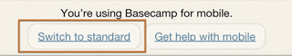
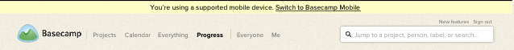
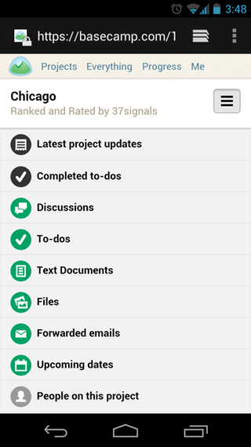

Quick question? Get fast answers on Twitter.
Tweet a question to @37signals for a quick answer between – Mon–Fri.
Basecamp has been optimized for reading and catching up with projects when you’re on the go! Since it's designed for speedy access, the mobile version of Basecamp doesn’t do everything the full version does.
In the mobile version, you can see everything in your account: every project, your Daily Progress, discussions, to-dos, text documents, forwarded emails, attachments, and files.
You can post and edit messages and comments. You can add, edit, and check-off to-do tasks. You can search your account and switch between accounts if you need. You can create and edit text documents.
You can’t create new to-do lists (you can add new to-dos to existing lists, though), reorder to-do lists, invite people, or edit files. But never fear ...
Switching views gives you the full functionality of your Basecamp account. It won't fit as elegantly on the smaller screen, but you'll get to add new to-do lists, invite people and everything else you're used to. You can switch back and forth between the mobile and standard version as needed.  
Another helpful option is the Email-In feature. Look for the “Email content to this project” in the menu at the top of every project in the mobile version of Basecamp.
Use Email-In to create new to-do lists and text documents. You can also email files from your mobile devices right to your projects. It's a great option for adding stuff to your projects on the go!

Next help article: Calendar and dates →
Tweet a question to @37signals for a quick answer between – Mon–Fri.
For in-depth questions, you can file a support ticket to get answered personally by us.